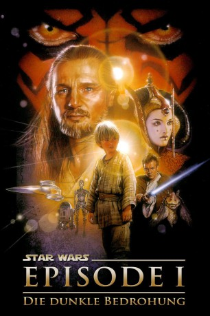

Auszeichnungen: für 3 Oscars nominiert
 gesehen am 15.11.2015
gesehen am 15.11.2015Alternativ: Star Wars: Episode I - The Phantom Menace
Auszeichnungen: für 3 Oscars nominiert gesehen am 15.11.2015
 
 IMDB-Wertung: 6.5 / 10
IMDB-Wertung: 6.5 / 10  Metascore:
Metascore: 
Rund 30 Jahre vor den Ereignissen des ersten Star Wars-Films nimmt die Legende ihren Anfang. Im Mittelpunkt steht der Sklavenjunge Anakin Skywalker, ein Kind mit außergewöhlichen Kräften. Als Anakin sich auf seine schicksalhafte Reise macht, weiß er nicht, daß ihm eine dunkle Zukunft als Darth Vader bevorsteht. Obi-Wan Kenobi, legendärer Jedi-Ritter der ersten Star Wars Trilogie, tritt als entschlossener Schüler des Jedi-Meisters Qui-Gon Jinn auf. Ihr Gegenspieler ist Palpatine, der ehrgeizige Senator der Republik, besser bekannt als der teuflische Imperator. Es ist die Zeit, als Jedi-Ritter machtvolle Friedenshüter einer umkämpften Galaxis sind und eine junge Königin mit aller Kraft für das Wohl ihres Volkes eintritt. Eine Zeit, überschattet von einer dunklen Macht, die nur auf den richtigen Moment wartet, um vernichtend zuzuschlagen...
Jahr: 1999
Dauer: 136 Minuten
FSK: 6
Land: USA Studio: 20th Century FoxTonspuren:
Untertitel: Deutsch, Englisch,
Auflösung: 1080p (1920x1080) Größe: 34406 MB
Genre: Action, Abenteuer, Fantasy, Sci-Fi
Regisseur:  George Lucas
George Lucas
Drehbuch: George Lucas
Soundtrack: John Williams
Darsteller:
 Liam Neeson als Qui-Gon Jinn
Liam Neeson als Qui-Gon Jinn Ewan McGregor als Obi-Wan Kenobi
Ewan McGregor als Obi-Wan Kenobi Natalie Portman als Queen Amidala / Padmé
Natalie Portman als Queen Amidala / Padmé Ian McDiarmid als Senator Palpatine
Ian McDiarmid als Senator Palpatine Pernilla August als Shmi Skywalker
Pernilla August als Shmi Skywalker Oliver Ford Davies als Sio Bibble
Oliver Ford Davies als Sio Bibble Ahmed Best als Jar Jar Binks
Ahmed Best als Jar Jar Binks Anthony Daniels als C-3PO
Anthony Daniels als C-3PO Kenny Baker als R2-D2
Kenny Baker als R2-D2 Frank Oz als Yoda
Frank Oz als Yoda Terence Stamp als Chancellor Valorum
Terence Stamp als Chancellor Valorum Brian Blessed als Boss Nass
Brian Blessed als Boss Nass Ray Park als Darth Maul
Ray Park als Darth Maul Warwick Davis als Wald / Pod race spectator / Mos Espa Citizen
Warwick Davis als Wald / Pod race spectator / Mos Espa Citizen Steve Speirs als Captain Tarpals
Steve Speirs als Captain Tarpals Silas Carson als Nute Gunray / Ki-Adi-Mundi / Lott Dodd / Republic Cruiser Pilot
Silas Carson als Nute Gunray / Ki-Adi-Mundi / Lott Dodd / Republic Cruiser Pilot Ralph Brown als Ric Olié
Ralph Brown als Ric Olié Celia Imrie als Fighter Pilot Bravo 5
Celia Imrie als Fighter Pilot Bravo 5 Samuel L. Jackson als Mace Windu
Samuel L. Jackson als Mace Windu Dominic West als Palace Guard
Dominic West als Palace Guard Sofia Coppola als Saché
Sofia Coppola als Saché Keira Knightley als Sabé
Keira Knightley als Sabé Bronagh Gallagher als Republic Cruiser Captain
Bronagh Gallagher als Republic Cruiser Captain Greg Proops als Fode
Greg Proops als Fode Hassani Shapi als Eeth Koth
Hassani Shapi als Eeth Koth Lindsay Duncan als TC-14
Lindsay Duncan als TC-14 Peter Serafinowicz als Darth Maul / Battle Droid Commander / Gungan Scout
Peter Serafinowicz als Darth Maul / Battle Droid Commander / Gungan Scout Richard Armitage als Naboo Fighter Pilot , uncredited
Richard Armitage als Naboo Fighter Pilot , uncredited Roman Coppola als Senate Guard , uncredited
Roman Coppola als Senate Guard , uncredited Sean Cronin als Coruscant Senate Guard , uncredited
Sean Cronin als Coruscant Senate Guard , uncredited Sally Hawkins als Villager , uncredited
Sally Hawkins als Villager , uncredited João Costa Menezes als Naboo Fighter Pilot , uncredited
João Costa Menezes als Naboo Fighter Pilot , uncredited Taylor Murphy als Battle Droid , uncredited
Taylor Murphy als Battle Droid , uncreditedDatei: X:\7+mehr(A-Z)\Star Wars\Star Wars Episode 1 - Die dunkle Bedrohung (1999, FSK6, 1920x1080).mkv seit 21.02.2015
Festplatte: HD Collection-7+mehr(A-Z)+Person
 Es gibt insgesamt 18 Filme in der Gruppe '7+mehr(A-Z)\Star Wars'
Es gibt insgesamt 18 Filme in der Gruppe '7+mehr(A-Z)\Star Wars'